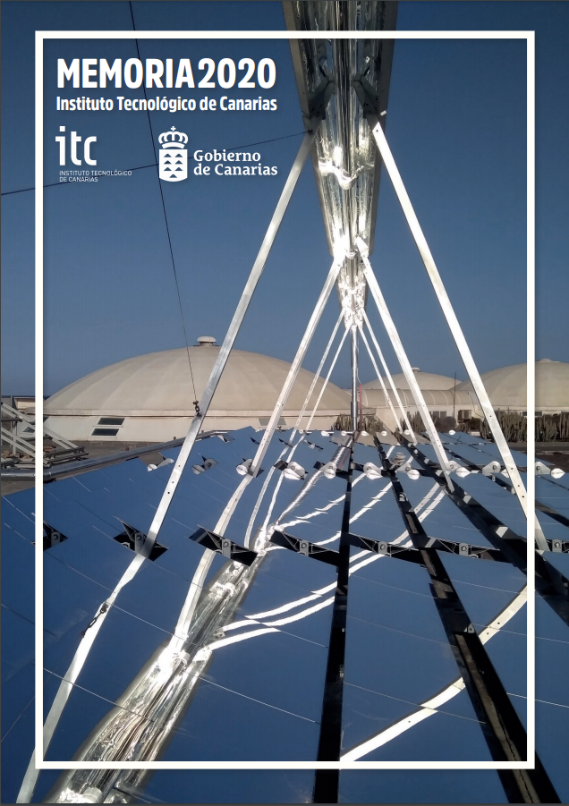

<ion-content>

  <div>

    <div class="column left"><br></div>

    <div class="column middle">
      <ion-text class="text-gray">
        <h4>
          Somos una empresa pública con más de 25 años de experiencia que apuesta por la ciencia y la tecnología
          como piezas esenciales en el trabajo de transformación socioeconómica y de desarrollo sostenible de las
          Islas Canarias. Contribuimos a la competitividad del tejido empresarial abriendo camino hacia nuevos
          ámbitos del sector tecnológico e industrial.
        </h4>
      </ion-text>
      <br>
      <ion-text class="text-gray">
        <h4>
          Como entre instrumental del Gobierno de Canarias, nuestra actividad se enmarca en la implementación de
          las políticas regionales de promoción de la investigación y la innovación aplicables al sector
          productivo, así como en la ejecución de proyectos colaborativos y de cooperación a nivel internacional.
        </h4>
      </ion-text>
      <br>
      <ion-text class="text-gray">
        <h4>
          Nuestra actividad de I+D+i está alineada con las áreas de especialización identificadas en la Estrategia
          del Goierno de especialización inteligente (RIS3) de Canarias para el periodo 2014-2020, hoja de ruta de
          la transformación socioeconómica del Archipiélago y que define las prioridades de inversión pública
          regional en investigación, desarrollo e innovación. Desde esta senda de crecimiento económico,
          inteligente y sostenible, y para poner en valor nuestro litoral y ubicación geoestratégica en el Atlántico,
          trabajamos para posicionar a Canarias como laboratorio natural de referencia internacional en el desarrollo
          de tecnologías para la sostenibilidad medioambiental y la eficiencia energética, así como para inspirar el
          avanza tecnologíco del tejido productivo regional.
        </h4>
      </ion-text>
      <br>
      <ion-text class="text-gray">
        <h4>
          Contribuimos a crear una economía basada en e conocimiento, centrada en la sostenibilidad y enfocada a la
          valorización de los recursos de Canarias.
        </h4>
      </ion-text>
      <br><br><br>
      <ion-text class="text-gray">
        <h4>
          Si quieres conocer más de nuestra trayectoria, te mostramos nuestros principales
          <a href="">hitos de estos últimos 25 años de existencia</a>.
        </h4>
      </ion-text>
      <br><br><br>
      <ion-text class="text-gray">
        <h4>
          Puedes descargarte los siguientes documentos con información sobre nuestra entidad y nuestra actividad.
        </h4>
      </ion-text>
      
      <br>
      <div class="centered">
        <h4><a href="https://www.itccanarias.org/web/images/itc/Instituto_Tecnolgico_de_Canarias_ITC_-_Dossier_Corporativo_2020.pdf">DOSSIER CORPORATIVO</a></h4>
        <ion-card href="https://www.itccanarias.org/web/images/itc/Instituto_Tecnolgico_de_Canarias_ITC_-_Dossier_Corporativo_2020.pdf">
          
          <ion-card-header>
            <ion-card-subtitle>DOSSIER CORPORATIVO</ion-card-subtitle>
            <ion-card-title>Instituto Technológico de Canarias</ion-card-title>
          </ion-card-header>
          <ion-card-content>
            Centro de referencia en el impulso technológico y la valorización de la I+D+i
          </ion-card-content>
        </ion-card>
      </div>

      <!-- Slideshow container -->
      <div class="slideshow-container">

        <!-- Full-width images with number and caption text -->
        <div class="mySlides fade">
          
          <div class="text">Nuestros directores de departamento en una reunión ToySerious</div>
        </div>

        <div class="mySlides fade">
          
          <div class="text">Fabrica ToySerious planificando el 'Campamento para Troncos'</div>
        </div>

        <!-- Next and previous buttons -->
        <a class="prev" onclick="plusSlides(-1)">&#10094;</a>
        <a class="next" onclick="plusSlides(1)">&#10095;</a>
      </div>
      <br>

      <!-- The dots/circles -->
      <div style="text-align:center">
        <span class="dot" onclick="currentSlide(1)"></span>
        <span class="dot" onclick="currentSlide(2)"></span>
      </div>

    </div>

    <div class="column right"><br></div>

  </div>

</ion-content>